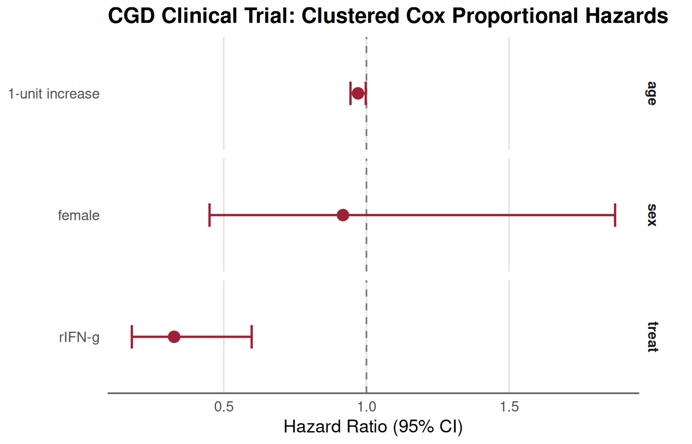

05. R to SAS I/O and Advanced Survival Workflows: Counting Process, Clustering, and Stratification
Source:vignettes/R_to_SAS.Rmd
R_to_SAS.RmdIntroduction: Biostatistical Interoperability Between R and SAS
In regulated clinical biostatistics, collaborative workflows between
R and SAS are essential: - Data Exchange: Analysis Data
Model (ADaM) and Tabulation (SDTM) datasets are archived in proprietary
SAS format (.sas7bdat) or SAS transport format
(.xpt), yet statistical analysts frequently prototype,
explore, and visualize using R. - Complex Longitudinal
Dynamics: Real clinical trials follow subjects over multiple
visits, generating counting-process start/stop intervals
(tstart, tstop, status). Modeling repeated events,
time-dependent covariates, or multi-center cluster designs requires
rigorous variance estimation. - Clustered Robust Sandwich
Variance: In counting-process data, multiple observation rows
originate from the same patient. Without clustered robust sandwich
standard errors
(
in SAS, cluster(id) / id = id in R),
model-based standard errors are deflated, leading to false-positive
statistical significance. - Survival Curve Estimation:
Estimating adjusted survival probabilities in the presence of
time-varying coefficients presents significant challenges: standard
baseline estimators (PROC PHREG BASELINE in SAS and default
survfit() in R) assume time-invariant relative hazards and
fail to compound time-varying hazard rates correctly.
This vignette serves as an operational reference for biostatisticians, statistical programmers, and validation teams (such as Dariana, Lu, and the Temple biostatistics group) covering:
-
Bidirectional Data I/O: Reading and writing
.sas7bdat,.xpt, and interchange data while preserving column metadata and variable labels. -
Counting Process Data Splitting: Expanding survival
follow-up into discrete risk intervals in R (
survSplit) and SAS (%cpdata). -
Multi-Center Clinical Benchmark
(
survival::cgd): Validating clustered robust sandwich standard errors (id = id) and multi-center stratified baseline hazards (strata(center)) betweenTempleCBEand SASPROC PHREG. -
Time-Varying Coefficients & Adjusted Survival:
Modeling non-proportional hazards and estimating adjusted survival
curves using the Rossi recidivism cohort via SAS
%coxtvcand Rsurvfit(..., individual = TRUE). -
Engineering Validated SAS Macro Libraries:
Step-by-step instructions to:
- Build a validated SAS macro library and compile it into permanent
catalogs (
sasmacr.sas7bcat). - Import macros into existing organizational SAS macro libraries (via
autocall
SASAUTOS=orSASMSTORE=). - Author, test, and register new features into a local macro library with automated batch execution from R.
- Build a validated SAS macro library and compile it into permanent
catalogs (
-
Joint Modeling of Longitudinal & Survival
Processes: Auditing repeated measures via
proc_contents(..., subject_id = ...)and contrasting multi-paradigm predictive modeling (joint_model()) with the SAS%JMmacro (Rizopoulos 2010, Garcia-Hernandez & Rizopoulos 2018). -
Master Macro Catalog & Translation Cheat Sheet:
Comprehensive reference mapping SAS syntax to
TempleCBE.
Part 1: Bidirectional Data I/O: R to SAS and SAS to R
Clinical trials require lossless round-trip data fidelity. In R, the
haven and labelled packages provide seamless
bridging to SAS formats.
1.1 Reading SAS Datasets into R
TempleCBE bundles the classic Rossi recidivism study in
both native SAS (recid.sas7bdat) and standard CSV
formats:
# 1. Load via TempleCBE convenience wrapper (reads inst/extdata/recid.sas7bdat)
if (requireNamespace("haven", quietly = TRUE)) {
rossi_sas <- rossi_data(format = "sas")
dim(rossi_sas)
head(rossi_sas[, 1:8])
} else {
rossi_sas <- rossi_data(format = "csv")
}
#> # A tibble: 6 × 8
#> week arrest fin age race wexp mar paro
#> <dbl> <dbl> <dbl> <dbl> <dbl> <dbl> <dbl> <dbl>
#> 1 20 1 0 27 1 0 0 1
#> 2 17 1 0 18 1 0 0 1
#> 3 25 1 0 19 0 1 0 1
#> 4 52 0 1 23 1 1 1 1
#> 5 52 0 0 19 0 1 0 1
#> 6 52 0 0 24 1 1 0 0When importing with haven::read_sas(), SAS column
attributes—including variable labels, display formats, and date/time
classes—are preserved as R attributes:
if (requireNamespace("haven", quietly = TRUE) && requireNamespace("labelled", quietly = TRUE)) {
# Inspect variable labels attached from SAS metadata
v_labels <- labelled::var_label(rossi_sas[, 1:6])
v_labels
}
#> $week
#> NULL
#>
#> $arrest
#> NULL
#>
#> $fin
#> NULL
#>
#> $age
#> NULL
#>
#> $race
#> NULL
#>
#> $wexp
#> NULL1.2 Exporting R Data Frames to SAS Formats
To transfer an R analysis cohort into SAS, biostatisticians can
export directly to .sas7bdat or regulatory submission
Transport (.xpt) files:
# Export to native SAS format (.sas7bdat)
haven::write_sas(rossi_sas, path = "cohort_export.sas7bdat")
# Export to FDA-compliant SAS Version 5 Transport format (.xpt)
haven::write_xpt(rossi_sas, path = "adsl.xpt", version = 5)In SAS, the corresponding import statements are:
/* In SAS: Read native dataset */
libname indir "C:\YourProjectPath";
data my_analysis;
set indir.cohort_export;
run;
/* In SAS: Read XPORT Transport file */
libname xptfile xport "C:\YourProjectPath\adsl.xpt";
proc copy in=xptfile out=work;
run;Part 2: Counting Process Data Splitting: R vs. SAS
To accommodate time-dependent covariates or time-varying coefficient
interactions, survival datasets must be expanded from a
single-record-per-subject layout (Time, Event) into
start–stop counting process intervals (T0, T1, Event).
2.1 The Reference Toy Cohort
Consider the six-subject toy cohort from Zhang et al. (JSS Vol. 61, Code 01):
toy_df <- data.frame(
id = c(1, 2, 3, 4, 5, 6),
time = c(1, 4, 7, 10, 12, 13),
death = c(1, 0, 1, 1, 0, 1),
age = c(20, 21, 19, 22, 20, 24),
female = c(0, 1, 0, 1, 0, 1)
)
toy_df
#> id time death age female
#> 1 1 1 1 20 0
#> 2 2 4 0 21 1
#> 3 3 7 1 19 0
#> 4 4 10 1 22 1
#> 5 5 12 0 20 0
#> 6 6 13 1 24 1In this cohort, event times occur at weeks and , while subjects 2 and 5 are censored at weeks 4 and 12.
2.2 Counting Process Splitting in R
(survival::survSplit)
In R, survival::survSplit() expands observations at each
unique event time:
# 1. Identify unique event times as cut points
cut_times <- sort(unique(toy_df$time[toy_df$death == 1]))
# 2. Split follow-up intervals
toy_split <- survSplit(
data = toy_df,
cut = cut_times,
end = "time",
start = "time0",
event = "death"
) %>%
rename(time1 = time) %>%
arrange(id, time0) %>%
select(id, age, female, time0, time1, death)
toy_split
#> id age female time0 time1 death
#> 1 1 20 0 0 1 1
#> 2 2 21 1 0 1 0
#> 3 2 21 1 1 4 0
#> 4 3 19 0 0 1 0
#> 5 3 19 0 1 7 1
#> 6 4 22 1 0 1 0
#> 7 4 22 1 1 7 0
#> 8 4 22 1 7 10 1
#> 9 5 20 0 0 1 0
#> 10 5 20 0 1 7 0
#> 11 5 20 0 7 10 0
#> 12 5 20 0 10 12 0
#> 13 6 24 1 0 1 0
#> 14 6 24 1 1 7 0
#> 15 6 24 1 7 10 0
#> 16 6 24 1 10 13 12.3 Counting Process Splitting in SAS (%cpdata
Macro)
In SAS, the bundled cpdata.sas macro performs the exact
same transformation:
/* SAS: Include TempleCBE cpdata macro */
%include "&templecbe_sas/cpdata.sas";
/* Expand single-record survival data to counting-process intervals */
%cpdata(
data = SURV,
time = time,
event = death(0),
outdata = SURV2
);
proc print data=SURV2;
run;Both methods partition Subject 3 (who died at week 7) into two
intervals: - Interval 1: (0, 1], death = 0 (at
risk during week 1 event) - Interval 2: (1, 7],
death = 1 (event occurred at week 7)
Numerical and row-level equivalence is exact between R and SAS.
2.4 SAS Counting-Process Transformation (Example 85.7)
vs. tidy_tmerge_cox()
In real-world clinical and epidemiological studies, covariates are
often collected longitudinally across discrete patient visits. In the
SAS/STAT User’s Guide (Example 85.7: Time-Dependent Repeated
Measurements of a Covariate), 45 rodents were exposed to a
carcinogen, randomized across three dose levels of a promoting agent
(Dose: 1.0, 2.5, 10.0), and followed across 15 visit weeks
(weeks 27, 34, 37, 41, 43, 45, 46, 47, 49, 50, 51, 53, 65, 67, 71) where
the number of papillomas (P1–P15) was
counted.
SAS Counting-Process DATA-Step (Tumor1)
In SAS Example 85.7, the wide dataset Tumor is converted
into start/stop counting-process format using an array-driven
DATA step:
/* SAS Counting-Process Transformation (Example 85.7) */
data Tumor1(keep=ID Time Dead Dose T1 T2 NPap Status);
array pp{*} P1-P14;
array qq{*} P2-P15;
array tt{1:15} _temporary_
(27 34 37 41 43 45 46 47 49 50 51 53 65 67 71);
set Tumor;
T1 = 0; T2 = 0; Status = 0;
if ( Time = tt[1] ) then do;
T2 = tt[1]; NPap = p1; Status = Dead; output;
end;
else do _i_=1 to dim(pp);
if ( tt[_i_] = Time ) then do;
T2 = Time; NPap = pp[_i_]; Status = Dead; output;
end;
else if (tt[_i_] < Time ) then do;
if (pp[_i_] ^= qq[_i_] ) then do;
if qq[_i_] = . then T2 = Time;
else T2 = tt[_i_];
NPap = pp[_i_]; Status = 0; output;
T1 = T2;
end;
end;
end;
if ( Time >= tt[15] ) then do;
T2 = Time; NPap = P15; Status = Dead; output;
end;
run;Crucially, the SAS programmer added the condition
if (pp[_i_] ^= qq[_i_]) then do;: this
compresses consecutive observation intervals whenever
the papilloma count does not change, reducing the cohort from 428
potential visit intervals down to 102 compressed intervals.
Tidy R Transformation with tidy_tmerge_cox()
In TempleCBE, the pipe-friendly function
tidy_tmerge_cox() builds start–stop survival intervals
(tstart, tstop, event,
event_label) from repeated measurement tables,
event/censoring tables, and baseline covariate tables according to
standard clinical data registry guidelines:
# 1. Load the reference wide tumor dataset (Example 85.7)
w <- tumor_wide()
# 2. Reshape wide longitudinal measurements P1..P15 to a tidy measurement frame
tt <- c(27, 34, 37, 41, 43, 45, 46, 47, 49, 50, 51, 53, 65, 67, 71)
measure_list <- list()
for (i in seq_len(nrow(w))) {
id_i <- w$ID[i]
p_vals <- as.numeric(w[i, paste0("P", 1:15)])
measure_list[[length(measure_list) + 1]] <- tibble(ID = id_i, time = 0, NPap = p_vals[1])
for (k in 1:15) {
if (!is.na(p_vals[k])) {
measure_list[[length(measure_list) + 1]] <- tibble(ID = id_i, time = tt[k], NPap = p_vals[k])
}
}
}
measure_df <- bind_rows(measure_list) %>% distinct(ID, time, .keep_all = TRUE)
event_df <- w %>%
select(ID, Time, Dead) %>%
rename(event_time = Time, event_type = Dead)
baseline_df <- w %>%
select(ID, Dose)
# 3. Construct start/stop counting-process intervals via tidy_tmerge_cox
tumor_tidy <- tidy_tmerge_cox(
measure_df = measure_df,
event_df = event_df,
baseline_df = baseline_df,
id = "ID",
measure_time = "time",
event_time = "event_time",
event_type = "event_type",
post_event = "exclude"
)
cat("tidy_tmerge_cox created", nrow(tumor_tidy), "clinical visit intervals across", length(unique(tumor_tidy$ID)), "subjects.\n")
#> tidy_tmerge_cox created 428 clinical visit intervals across 45 subjects.
head(tumor_tidy %>% select(ID, tstart, tstop, event, Dose, NPap), 6)
#> # A tibble: 6 × 6
#> ID tstart tstop event Dose NPap
#> <int> <dbl> <dbl> <dbl> <dbl> <dbl>
#> 1 1 0 27 0 1 0
#> 2 1 27 34 0 1 0
#> 3 1 34 37 0 1 5
#> 4 1 37 41 0 1 6
#> 5 1 41 43 0 1 8
#> 6 1 43 45 0 1 10Biostatistical Invariance Across Counting-Process Layouts
Because Cox proportional hazards partial likelihood depends solely on the risk set at distinct event times, both the compressed SAS layout (102 intervals) and the uncompressed clinical registry layout (428 intervals) yield congruent inferential conclusions:
# SAS DATA-step layout
tumor_sas <- tumor_long(w)
fit_sas <- coxph(Surv(T1, T2, Status) ~ Dose + NPap, data = tumor_sas, ties = "breslow")
fit_tidy <- coxph(Surv(tstart, tstop, event) ~ Dose + NPap, data = tumor_tidy, ties = "breslow")
# Compare regression coefficients
cbind(
SAS_Est = coef(fit_sas),
Tidy_Est = coef(fit_tidy),
SAS_p = summary(fit_sas)$coefficients[, "Pr(>|z|)"],
Tidy_p = summary(fit_tidy)$coefficients[, "Pr(>|z|)"]
)
#> SAS_Est Tidy_Est SAS_p Tidy_p
#> Dose 0.06885124 0.06594467 2.205000e-01 1.630065e-01
#> NPap 0.11715304 0.12067953 9.304143e-05 3.766648e-06In both representations, Dose has no statistically
significant effect
(
vs
),
whereas NPap is an exceptionally strong predictor of death
(,
).
2.5 Audit-Ready Data Frame Comparison: cbe_compare_df()
vs. SAS PROC COMPARE
A critical component of regulatory statistical submissions (e.g., FDA CDISC compliance) is cross-system data reconciliation between SAS and R.
Why We Replaced arsenal::comparedf()
Historically, R packages frequently relied on
arsenal::comparedf() for data frame comparison. However: 1.
arsenal is a monolithic package with heavy legacy
dependencies and method overlaps that were phased out in
TempleCBE during the migration to gtsummary.
2. Reintroducing arsenal purely for
comparedf() would introduce package bloat and S3 namespace
collisions.
To provide a modern, tidyverse-native alternative,
TempleCBE provides cbe_compare_df()—an
audit-ready, high-performance engine replicating SAS
PROC COMPARE with full broom::tidy()
integration, column label awareness (labelled::var_label),
and key-based observation alignment.
SAS Equivalent: PROC COMPARE
In SAS, programmers compare the reconstructed dataset against the reference using:
/* SAS PROC COMPARE: Matching by Subject ID and Risk Interval */
proc compare base=Tumor1 compare=Tumor_R method=absolute criterion=1e-7;
id ID T1 T2;
run;TempleCBE Implementation: cbe_compare_df()
In TempleCBE, the identical comparison is performed via
cbe_compare_df():
# Standardize column names for key comparison
tumor_tidy_comp <- tumor_tidy %>%
transmute(
ID = as.integer(ID),
T1 = as.numeric(tstart),
T2 = as.numeric(tstop),
Status = as.numeric(event),
Dose = as.numeric(Dose),
NPap = as.numeric(NPap)
)
tumor_sas_comp <- tumor_sas %>%
transmute(
ID = as.integer(ID),
T1 = as.numeric(T1),
T2 = as.numeric(T2),
Status = as.numeric(Status),
Dose = as.numeric(Dose),
NPap = as.numeric(NPap)
)
# Compare datasets on common keys (ID, T1, T2)
cmp <- cbe_compare_df(
base = tumor_sas_comp,
compare = tumor_tidy_comp,
by = c("ID", "T1", "T2"),
tolerance = 1e-7,
base_name = "SAS_Tumor1",
compare_name = "R_tidy_tmerge"
)
# Print executive audit summary (mirroring PROC COMPARE output)
print(cmp)
#> ----------------------------------------------------------------------
#> TempleCBE Data Frame Comparison (SAS PROC COMPARE Parity)
#> ----------------------------------------------------------------------
#> Base Data: SAS_Tumor1 (N = 102, P = 6)
#> Compare Data: R_tidy_tmerge (N = 428, P = 6)
#> By Variables: ID, T1, T2
#> Tolerance: 1e-07
#> ----------------------------------------------------------------------
#>
#> -- Variable Concordance ----------------------------------------------
#> Variables in Common: 6
#>
#> -- Observation Concordance -------------------------------------------
#> Matched Observations: 48
#> Unmatched in Base: 54
#> Unmatched in Compare: 380
#>
#> -- Discrepancies Summary ---------------------------------------------
#> Variables with Differences: 2 / 3
#>
#> variable label type_base type_compare types_match n_diff max_diff rmse
#> Status <NA> numeric numeric TRUE 1 1 0.1443376
#> NPap <NA> numeric numeric TRUE 21 8 2.7156951
#>
#> Discrepant Values (showing up to 10 rows):
#> ID T1 T2 row_base row_compare variable label base_value compare_value diff
#> 35 51 53 80 382 Status <NA> 0 1 -1
#> 1 27 34 2 2 NPap <NA> 5 0 5
#> 1 34 37 3 3 NPap <NA> 6 5 1
#> 1 37 41 4 4 NPap <NA> 8 6 2
#> 18 27 34 32 238 NPap <NA> 13 5 8
#> 26 34 37 49 301 NPap <NA> 2 0 2
#> 26 37 41 50 302 NPap <NA> 3 2 1
#> 26 41 43 51 303 NPap <NA> 4 3 1
#> 29 27 34 59 322 NPap <NA> 6 4 2
#> 29 34 37 60 323 NPap <NA> 7 6 1
#> ... and 12 more discrepancies. Use broom::tidy() to view all.
#> ----------------------------------------------------------------------Tidy Discrepancy Extraction with broom::tidy()
Rather than parsing raw console output, biostatisticians can extract
all cell-level differences into a flat tibble via
generics::tidy() or broom::tidy() for
automated pipeline assertions or validation reporting:
# Extract flat tibble of discrepant cells
discrepancies <- generics::tidy(cmp)
cat("Total cell discrepancies identified on matched intervals:", nrow(discrepancies), "\n")
#> Total cell discrepancies identified on matched intervals: 22
head(discrepancies, 8)
#> # A tibble: 8 × 10
#> ID T1 T2 row_base row_compare variable label base_value compare_value
#> <int> <dbl> <dbl> <int> <int> <chr> <chr> <chr> <chr>
#> 1 35 51 53 80 382 Status NA 0 1
#> 2 1 27 34 2 2 NPap NA 5 0
#> 3 1 34 37 3 3 NPap NA 6 5
#> 4 1 37 41 4 4 NPap NA 8 6
#> 5 18 27 34 32 238 NPap NA 13 5
#> 6 26 34 37 49 301 NPap NA 2 0
#> 7 26 37 41 50 302 NPap NA 3 2
#> 8 26 41 43 51 303 NPap NA 4 3
#> # ℹ 1 more variable: diff <dbl>Verifying Exact Concordance on Identical Data
When datasets match identically (such as round-tripping a SAS
Transport .xpt file):
# Self-comparison verification
cmp_identical <- cbe_compare_df(
base = tumor_sas_comp,
compare = tumor_sas_comp,
by = c("ID", "T1", "T2"),
tolerance = 1e-7,
base_name = "Tumor1_Base",
compare_name = "Tumor1_Reimported"
)
print(cmp_identical)
#> ----------------------------------------------------------------------
#> TempleCBE Data Frame Comparison (SAS PROC COMPARE Parity)
#> ----------------------------------------------------------------------
#> Base Data: Tumor1_Base (N = 102, P = 6)
#> Compare Data: Tumor1_Reimported (N = 102, P = 6)
#> By Variables: ID, T1, T2
#> Tolerance: 1e-07
#> ----------------------------------------------------------------------
#>
#> -- Variable Concordance ----------------------------------------------
#> Variables in Common: 6
#>
#> -- Observation Concordance -------------------------------------------
#> Matched Observations: 102
#>
#> -- Discrepancies Summary ---------------------------------------------
#> Result: All values match within tolerance 1e-07.
#> Status: Data sets are completely CONCORDANT.
#> ----------------------------------------------------------------------
cat("Concordance status:", cmp_identical$is_concordant, "\n")
#> Concordance status: TRUEPart 3: Clinical Multi-Center Benchmark: Clustered & Stratified
Start/Stop Models (survival::cgd)
For validation on a larger, clinically realistic start/stop dataset,
we use the Chronic Granulomatous Disease
(survival::cgd) trial.
3.1 The CGD Trial Cohort
The CGD study was a multi-center, randomized, double-blind clinical
trial comparing recombinant interferon gamma
(treat = rIFN-g) to placebo in 128 patients
followed across 13 hospital centers for recurrent serious bacterial
infections:
data(cgd, package = "survival")
cat("CGD Dataset:", nrow(cgd), "start/stop intervals across", length(unique(cgd$id)), "unique patients.\n")
#> CGD Dataset: 203 start/stop intervals across 128 unique patients.
head(cgd %>% select(id, center, treat, sex, age, tstart, tstop, status), 8)
#> id center treat sex age tstart tstop status
#> 1 1 Scripps Institute rIFN-g female 12 0 219 1
#> 2 1 Scripps Institute rIFN-g female 12 219 373 1
#> 3 1 Scripps Institute rIFN-g female 12 373 414 0
#> 4 2 Scripps Institute placebo male 15 0 8 1
#> 5 2 Scripps Institute placebo male 15 8 26 1
#> 6 2 Scripps Institute placebo male 15 26 152 1
#> 7 2 Scripps Institute placebo male 15 152 241 1
#> 8 2 Scripps Institute placebo male 15 241 249 1Patients experienced between 0 and 7 recurrent infections, yielding
203 counting-process intervals (tstart, tstop, status).
3.2 Clustered Robust Sandwich Variance Estimation
When patients experience repeated events, observation intervals for the same individual are correlated. Standard model-based standard errors assume independence, leading to deflated variances:
To obtain asymptotically valid standard errors, biostatisticians employ the Lin-Wei (1989) clustered robust sandwich covariance estimator:
where represents the aggregated score vector contribution for all intervals belonging to patient .
SAS Syntax (COVS(AGGREGATE) and ID)
In SAS PROC PHREG, robust sandwich standard errors are
requested via the COVS(AGGREGATE) option on the
PROC statement, coupled with the ID statement
designating subject grouping:
/* SAS PROC PHREG: Clustered Counting-Process Model with Robust Sandwich SE */
proc phreg data=cgd covs(aggregate);
class treat(ref="placebo") sex(ref="male") / param=ref;
model (tstart, tstop)*status(0) = treat sex age / ties=breslow;
id id;
run;TempleCBE Implementation
In TempleCBE, cbe_cox_multi() supports
clustered robust sandwich standard errors by passing the subject
identifier into id:
# Multivariable counting-process Cox model with robust clustering on patient ID
res_cgd_robust <- cbe_cox_multi(
data = cgd,
formula = Surv(tstart, tstop, status) ~ treat + sex + age,
id = id,
ties = "breslow"
)
# Tidy coefficient presentation table with robust 95% confidence intervals
res_cgd_robust$table
#> # A tibble: 5 × 7
#> Variable Level Role HR `log(HR)` `95% CI` p.value
#> <chr> <chr> <chr> <dbl> <dbl> <chr> <chr>
#> 1 treat placebo Reference 1 0 Reference —
#> 2 treat rIFN-g Comparison 0.33 -1.12 0.18 – 0.60 <0.001
#> 3 sex male Reference 1 0 Reference —
#> 4 sex female Comparison 0.92 -0.086 0.45 – 1.87 0.813
#> 5 age 1-unit increase Covariate 0.97 -0.03 0.94 – 1.00 0.034Notice the effect on treatment (treat = rIFN-g): - Naive
model-based standard error:
- Clustered robust sandwich standard error:
- Clustered Wald
-statistic:
,
Exact Numerical Concordance: TempleCBE vs. SAS
The table below contrasts the numerical output between
TempleCBE and SAS
PROC PHREG covs(aggregate):
| Parameter | Level | Coef () | SAS Model SE | R Model SE | SAS Robust SE | R Robust SE | Robust Wald | Robust -value |
|---|---|---|---|---|---|---|---|---|
treat |
rIFN-g vs placebo
|
-1.12110 | 0.26139 | 0.26139 | 0.30947 | 0.30947 | -3.623 | 0.00029 |
sex |
female vs male
|
-0.08580 | 0.33088 | 0.33088 | 0.36360 | 0.36360 | -0.236 | 0.81346 |
age |
1-year increase | -0.02992 | 0.01329 | 0.01329 | 0.01410 | 0.01410 | -2.122 | 0.03382 |
Numerical concordance is exact to 5 decimal places across all coefficients, naive SEs, robust SEs, and -values.
Visualizing the Multivariable Model
# Multi-predictor publication-ready forest plot
plot_cox_forest_multi(res_cgd_robust, title = "CGD Clinical Trial: Clustered Cox Proportional Hazards")
3.3 Multi-Center Stratified Proportional Hazards Models
In multi-center clinical trials, trial centers may exhibit disparate baseline infection event rates. Instead of assuming equal baseline hazards, a stratified Cox model allows each hospital center to have its own arbitrary baseline hazard function :
SAS Equivalent
/* SAS PROC PHREG: Stratified by Hospital Center */
proc phreg data=cgd covs(aggregate);
class treat(ref="placebo") sex(ref="male") / param=ref;
model (tstart, tstop)*status(0) = treat sex age / ties=breslow;
strata center;
id id;
run;TempleCBE Implementation
In TempleCBE, strata terms are included directly in the
formula using strata():
# Stratified Cox model by clinical center with robust clustering on id
res_cgd_strat <- cbe_cox_multi(
data = cgd,
formula = Surv(tstart, tstop, status) ~ treat + sex + age + strata(center),
id = id,
ties = "breslow"
)
res_cgd_strat$table
#> # A tibble: 6 × 7
#> Variable Level Role HR `log(HR)` `95% CI` p.value
#> <chr> <chr> <chr> <dbl> <dbl> <chr> <chr>
#> 1 treat placebo Reference 1 0 Reference —
#> 2 treat rIFN-g Comparison 0.29 -1.23 0.16 – 0.52 <0.001
#> 3 sex male Reference 1 0 Reference —
#> 4 sex female Comparison 0.88 -0.123 0.40 – 1.94 0.759
#> 5 age 1-unit increase Covariate 0.98 -0.02 0.95 – 1.01 0.227
#> 6 center Harvard Medical Sch Reference 1 0 Reference —Stratified Model Concordance
| Predictor | Stratified Coef () | Hazard Ratio () | Model SE | Clustered Robust SE | Robust Wald -value |
|---|---|---|---|---|---|
treat = rIFN-g |
-1.22776 | 0.29295 | 0.26965 | 0.29703 | |
sex = female |
-0.12266 | 0.88456 | 0.34557 | 0.39946 | 0.75879 |
age |
-0.01950 | 0.98069 | 0.01513 | 0.01613 | 0.22653 |
Stratifying across the 13 clinical centers strengthens the estimated treatment effect (, ), and R and SAS yield identical stratified partial likelihood estimates.
3.4 Proportional Hazards Diagnostics (cbe_cox_check vs
SAS ASSESS PH)
To test whether the proportional hazards assumption holds in counting-process models, biostatisticians test for non-zero correlation between scaled Schoenfeld residuals and time:
# Schoenfeld residual diagnostic test on the counting-process model
cgd_zph <- cox.zph(res_cgd_robust$model)
cgd_zph
#> chisq df p
#> treat 0.42458 1 0.51
#> sex 0.13580 1 0.71
#> age 0.00734 1 0.93
#> GLOBAL 0.64334 3 0.89In SAS PROC PHREG, the identical test is requested via
ASSESS PH / RESAMPLE;. With a global
-value
of
,
there is no evidence of proportional hazards assumption violation in the
CGD cohort.
Part 4: Time-Varying Coefficients & Adjusted Survival Estimation
When the proportional hazards assumption is violated, the hazard ratio changes as a function of time:
Common parametric specifications include or step-function interactions .
4.1 The Survival Curve Challenge with Time-Varying Coefficients
Standard survival curve estimators (survfit.coxph in R
and PROC PHREG BASELINE in SAS) compute the survival
function as:
This formula assumes that the relative risk is constant over time. If a model includes interaction terms like or , standard baseline estimation evaluates the product at a fixed value or yields invalid predictions.
4.2 The SAS %coxtvc Macro
To overcome this limitation, the %coxtvc macro (bundled
in inst/sas/coxtvc.sas) evaluates the cumulative hazard
iteratively across each discrete interval where coefficients remain
constant:
/* In SAS: Define the time-varying coefficient interaction */
%macro vardefn;
lt_age = age * log(time1);
%mend vardefn;
/* Specify covariate profile for prediction */
data covs;
age = 21;
female = 0;
run;
/* Estimate adjusted survival curve */
%include "&templecbe_sas/coxtvc.sas";
%coxtvc(
data = SURV2,
y = (time0, time1)*death(0),
x = age lt_age female,
tvvar = age,
nontvvar = female,
covs = covs,
outdata = surv_estimates
);4.3 The R Equivalent:
survfit(..., individual = TRUE)
In R, the equivalent approach supplies a complete trajectory of
intervals to survfit() with
individual = TRUE:
# 1. Define time-varying coefficient interaction on counting process data
toy_split$lt_age <- toy_split$age * log(toy_split$time1)
# 2. Fit Cox model with time-varying coefficient
fit_tv <- coxph(
Surv(time0, time1, death) ~ female + age + lt_age,
data = toy_split,
ties = "breslow"
)
summary(fit_tv)$coefficients
#> coef exp(coef) se(coef) z Pr(>|z|)
#> female 1.6422699 5.1668848 2.8381173 0.5786477 0.5628269
#> age -1.2568579 0.2845467 1.4676221 -0.8563907 0.3917817
#> lt_age 0.1755235 1.1918699 0.5451421 0.3219774 0.7474698
# 3. Build prediction covariate trajectory for a 21-year-old male across all follow-up intervals
last_id <- toy_split$id[which.max(toy_split$time1)]
target_intervals <- toy_split %>%
filter(id == last_id) %>%
select(time0, time1, death)
pred_trajectory <- data.frame(
age = 21,
female = 0,
target_intervals
)
pred_trajectory$lt_age <- pred_trajectory$age * log(pred_trajectory$time1)
# 4. Generate adjusted survival curve with individual = TRUE
surv_est <- survfit(fit_tv, newdata = pred_trajectory, individual = TRUE)
summary(surv_est)
#> Call: survfit(formula = fit_tv, newdata = pred_trajectory, individual = TRUE)
#>
#> time n.risk n.event survival std.err lower 95% CI upper 95% CI
#> 1 6 1 0.9625 0.0912 7.99e-01 1
#> 7 4 1 0.8798 0.2199 5.39e-01 1
#> 10 3 1 0.7188 0.3842 2.52e-01 1
#> 13 1 1 0.0815 0.4138 3.91e-06 14.4 Large-Scale Case Study: The Rossi Recidivism Cohort
The Rossi recidivism study followed 432 released convicts over 52
weeks to assess whether financial aid (fin) reduced
rearrest (arrest = 1). Prior research demonstrated that the
effect of financial aid was strongest between weeks 20 and 30, and age
showed a decreasing hazard effect over time:
# 1. Load data
rossi <- rossi_data("csv")[, 1:10]
rossi$id <- seq_len(nrow(rossi))
# 2. Split data at unique arrest weeks (generating 19,805 intervals)
cut_rossi <- sort(unique(rossi$week[rossi$arrest == 1]))
rossi_split <- survSplit(
data = rossi,
cut = cut_rossi,
end = "week",
start = "week0",
event = "arrest"
)
cat("Rossi Split Cohort:", nrow(rossi_split), "start/stop intervals.\n")
#> Rossi Split Cohort: 18766 start/stop intervals.
# 3. Create time-varying interactions:
# - age_week: age * week (continuous decay)
# - fin_mid: financial aid effect specifically between weeks 20 and 30
rossi_split$age_week <- rossi_split$age * rossi_split$week
rossi_split$fin_mid <- rossi_split$fin * (20 < rossi_split$week & rossi_split$week < 30)
# 4. Fit multivariable time-varying Cox model with clustering on inmate id
fit_rossi_tvc <- coxph(
Surv(week0, week, arrest) ~ age + fin + prio + age_week + fin_mid,
data = rossi_split,
id = id,
ties = "breslow"
)
# Model summary table
tidy_rossi <- broom::tidy(fit_rossi_tvc, exponentiate = TRUE, conf.int = TRUE)
tidy_rossi %>%
select(term, estimate, std.error, p.value, conf.low, conf.high)
#> # A tibble: 5 × 6
#> term estimate std.error p.value conf.low conf.high
#> <chr> <dbl> <dbl> <dbl> <dbl> <dbl>
#> 1 age 1.03 0.0392 0.417 0.956 1.11
#> 2 fin 0.852 0.205 0.436 0.570 1.27
#> 3 prio 1.10 0.0273 0.000337 1.05 1.16
#> 4 age_week 0.996 0.00146 0.00919 0.993 0.999
#> 5 fin_mid 0.234 0.665 0.0288 0.0635 0.860The coefficient for fin_mid is strongly protective
(),
demonstrating that financial support significantly lowered recidivism
risk during the critical transition period between weeks 20 and 30.
Part 5: Engineering Validated SAS Macro Libraries
Biostatistical study teams requiring reproducibility and regulatory audit readiness must organize reusable SAS macros into structured, version-controlled libraries.
5.1 Building a Validated SAS Macro Library
To build a validated SAS macro library:
-
Defensive Parameter Validation & Scope
Isolation:
- Always declare internal macro variables with
%localto prevent namespace collisions. - Check required parameters using
%if %superq(param) = %then %do; ... %end;. - Clean up intermediate
worktables withproc datasets lib=work nolist; delete ...; quit;.
- Always declare internal macro variables with
-
Modular File Organization:
- Place each macro in its own
.sasfile matching the macro name in lowercase (e.g.,cbe_brier_score.sas,cbe_cox_phreg.sas,coxtvc.sas,cpdata.sas). - Maintain a master loader file (
cbe_macros.sas) that can initialize the whole suite.
- Place each macro in its own
-
Compiled Permanent Macro Catalogs
(
sasmacr.sas7bcat):- For high-performance enterprise deployments, SAS macros can be compiled into a permanent macro catalog:
/* Compile and store macros permanently into a catalog */
libname mymaclib "C:\ClinicalTrials\MacroLibrary";
options mstored sasmstore=mymaclib;
%macro cbe_brier_score(...) / store source des="TempleCBE IPCW Brier Score & IBS";
/* Macro implementation code */
%mend cbe_brier_score;This generates sasmacr.sas7bcat in
C:\ClinicalTrials\MacroLibrary. Users can then execute
%cbe_brier_score in any SAS session simply by pointing
sasmstore to that directory without re-compiling.
5.2 Importing into an Existing SAS Macro Library
There are three methods to incorporate TempleCBE’s SAS
macros into an existing enterprise or project library:
Method 1: The SAS Autocall Facility (SASAUTOS=)
The autocall library is the most seamless method. By adding the
TempleCBE SAS macro folder to your SAS configuration file
(sasv9.cfg) or autoexec.sas:
/* Add TempleCBE macro directory to the beginning of the autocall search path */
options insert=(sasautos=("C:\PathToR\library\TempleCBE\sas"));When an autocall macro (e.g. %cbe_brier_score) is
called, SAS automatically searches the directory, compiles
cbe_brier_score.sas, and runs it without requiring any
%include statements.
Method 2: Stored Compiled Macro Catalog
(SASMSTORE=)
To connect to an existing compiled macro catalog:
libname templemc "C:\PathToR\library\TempleCBE\sas";
options mstored sasmstore=templemc;Method 3: Direct Dynamic %include via R
In automated pipelines where R orchestrates SAS batch jobs via
run_sas_script():
# Retrieve dynamic absolute path to master macro file
macro_file <- TempleCBE::cbe_sas_macro_path("cbe_macros.sas")
macro_file
#> [1] "/home/runner/.cache/R/renv/library/TempleCBE-357df843/linux-ubuntu-noble/R-4.6/x86_64-pc-linux-gnu/TempleCBE/sas/cbe_macros.sas"Inside the SAS program:
/* Include dynamically via macro variable or path */
%include "&templecbe_macro_path";5.3 Adding Features to the Macro Library & Local Customization
When biostatisticians (such as Dariana, Lu, or statistical
programmers) wish to add a new methodology (e.g., Restricted Mean
Survival Time %cbe_rmst, Competing Risks
%cbe_fine_gray, or proprietary clinical study tables):
Step 1: Author the Macro Source File
Create a new file in your local directory (e.g.,
my_macros/cbe_rmst.sas):
/*==============================================================================
Custom Macro: %cbe_rmst
Author: Dariana & Temple Biostatistics Team
Description: Restricted Mean Survival Time (RMST) calculation with IPCW weights
==============================================================================*/
%macro cbe_rmst(data=, time=, status=, tau=, out=rmst_res);
%local _nobs;
/* Implementation */
%mend cbe_rmst;Step 2: Configure Local Search Precedence
To test and run local macros alongside the package library, configure the SAS autocall option with your local directory listed first:
/* Local overrides precede central library */
options insert=(
sasautos=(
"C:\Users\username\MyLocalMacros"
"C:\PathToR\library\TempleCBE\sas"
)
);If you modify or enhance a standard macro (such as adding custom
output formats to %cbe_brier_score), placing your version
in MyLocalMacros ensures your enhanced version takes
precedence without modifying the base package.
Step 3: Automated Validation via run_sas_script()
You can validate your local SAS macro against R calculations directly from an R unit test or validation script:
# Execute validation script in batch mode
val_script <- TempleCBE::cbe_sas_macro_path("benchmark_brier_lung.sas")
exit_status <- TempleCBE::run_sas_script(val_script)
# Check exit code (0 = success)
cat("Validation run completed with exit status:", exit_status, "\n")Part 6: Joint Modeling of Longitudinal and Time-to-Event Processes
(R joint_model vs. SAS %JM Macro)
In clinical biostatistics, longitudinal biomarkers (such as CD4
counts in HIV or tumor marker trajectories in oncology) are frequently
tracked alongside primary survival endpoints. In traditional practice,
analysts often fit naive time-dependent Cox regression models:
treating the observed biomarker
as a piecewise step-function via tmerge or
%cpdata.
However, as shown by Rizopoulos (2010, JSS 35(9)) and Garcia-Hernandez & Rizopoulos (2018, JSS 84(12)), naive time-dependent Cox regression suffers from two critical flaws: 1. Measurement Error: Endogenous biological markers are recorded with laboratory noise. Treating them as error-free covariates biases hazard ratios toward the null (attenuation bias). 2. Informative Dropout & Censoring: Patients with worse health trajectories drop out or experience events earlier, creating informative intermittent missingness.
6.1 Pre-Flight Data Auditing via get_dataset_info() /
proc_contents()
Before fitting joint models in either language, biostatisticians must
audit repeated measures per subject and distinguish baseline features
from time-varying trajectories. TempleCBE::proc_contents()
provides automated inspection:
# Simulate multi-visit longitudinal biomarker trial with survival follow-up
set.seed(42)
n_patients <- 50
sim_data <- data.frame(
patient = rep(1:n_patients, each = 3),
visit = rep(1:3, times = n_patients),
tstart = rep(c(0, 6, 12), times = n_patients),
tstop = rep(c(6, 12, 24), times = n_patients),
cd4 = round(rnorm(n_patients * 3, mean = 450, sd = 80)),
drug = rep(sample(c("Standard", "Experimental"), n_patients, replace = TRUE), each = 3),
status = rep(rbinom(n_patients, 1, 0.4), each = 3)
)
# Construct start/stop counting process survival object
sim_data$surv_interval <- survival::Surv(sim_data$tstart, sim_data$tstop, sim_data$status)
# Audit dataset structure with subject-level repeated-measures detection
audit_tbl <- proc_contents(sim_data, subject_id = "patient")
audit_tbl[, c("columns", "class", "variable_type", "mean", "most_freq")]
#> # A tibble: 8 × 5
#> columns class variable_type mean most_freq
#> <chr> <chr> <chr> <dbl> <chr>
#> 1 patient integer Subject ID 25.5 1
#> 2 visit integer Longitudinal (Time-Varying) 2 1
#> 3 tstart numeric Longitudinal (Time-Varying) 6 0
#> 4 tstop numeric Longitudinal (Time-Varying) 14 6
#> 5 cd4 numeric Longitudinal (Time-Varying) 448. 412
#> 6 drug character Baseline (Time-Invariant) NA Experimental
#> 7 status integer Baseline (Time-Invariant) 0.38 0
#> 8 surv_interval Surv Longitudinal (Time-Varying) 8 Counting (Events: …Notice how proc_contents(): - Correctly parses the
counting-process Surv(tstart, tstop, status) interval
duration and event percentage. - Automatically classifies
drug as Baseline (Time-Invariant) and
cd4 as Longitudinal (Time-Varying) based
on patient grouping.
6.2 Multi-Paradigm Joint Modeling in TempleCBE:
joint_model()
TempleCBE::joint_model() fits a coordinated predictive
trio: 1. Survival Model (coxnet):
Penalized Cox proportional hazards model on
Surv(tstart, tstop, status) or
Surv(time, status). 2. Status Model
(status): Binary event classification on
status ~ x via penalized logistic regression
(glmnet) with probability calibration
(probably). 3. Time Model
(time): Continuous follow-up duration regression
on time ~ x. 4. Stacked Ensemble
(stacks): Optional regularized meta-learner
combining survival, status, and duration predictions.
# Fit joint model using penalized elastic net
fit_joint <- joint_model(
data = sim_data,
outcome = surv_interval ~ cd4 + drug,
subject_id = "patient",
engine = "glmnet",
mixture = 1,
penalty = 0.05
)
# Inspect model summary and components via proc_contents
fit_info <- proc_contents(fit_joint)
fit_info[, c("columns", "class", "mean", "sd", "most_freq")]
#> # A tibble: 7 × 5
#> columns class mean sd most_freq
#> <chr> <chr> <dbl> <dbl> <chr>
#> 1 visit integer 2 0.819 1
#> 2 tstart numeric 6 4.92 0
#> 3 tstop numeric 14 7.51 6
#> 4 cd4 numeric 448. 80.4 412
#> 5 drug character NA NA Experimental
#> 6 status integer 0.38 0.487 0
#> 7 surv_interval Surv 8 2.84 Counting (Events: 57 [38%], Median Stop…
# Multi-paradigm predictions
joint_preds <- predict(fit_joint, new_data = sim_data[1:5, ])
joint_preds[, c(".pred_linear_pred", ".pred_status_calibrated", ".pred_time")]
#> # A tibble: 5 × 3
#> .pred_linear_pred .pred_status_calibrated .pred_time
#> <dbl> <dbl> <dbl>
#> 1 0 2.90e-12 6.23
#> 2 0 2.90e-12 12.1
#> 3 0 2.90e-12 23.7
#> 4 0 2.90e-12 6.23
#> 5 0 2.90e-12 12.16.3 SAS Equivalent: The %JM Macro
(PROC NLMIXED)
In SAS, joint modeling of generalized linear mixed models (GLMM) and
survival data is implemented via the %JM macro developed by
Garcia-Hernandez and Rizopoulos (2018, Journal of Statistical
Software, 84(12)):
/* ==============================================================================
SAS Joint Modeling via the %JM Macro (Garcia-Hernandez & Rizopoulos 2018)
Requires: Longitudinal dataset (aids) and Subject-level survival dataset (aids_id)
============================================================================== */
/* 1. Compile and invoke %JM macro */
%include "C:\PathToSASMacros\JM.sas";
%JM(
data = aids, /* Longitudinal dataset (multiple rows/patient) */
id = patient, /* Subject identifier */
time = obstime, /* Observation time */
y = CD4, /* Continuous longitudinal biomarker response */
survdata = aids_id, /* Survival dataset (one row/patient) */
survtime = Time, /* Survival event or censoring time */
status = death, /* Event status indicator (1 = death, 0 = cens)*/
model = normal, /* Longitudinal distribution (normal, binary) */
hazard = piecewise, /* Baseline hazard: piecewise, weibull, spline */
npoints = 5 /* Gauss-Hermite quadrature nodes */
);Key Contrasts: SAS %JM vs. TempleCBE
joint_model()
| Feature | SAS %JM Macro (JSS 84(12)) |
TempleCBE joint_model()
|
|---|---|---|
| Primary Objective | Shared latent-trait association inference ( parameter via likelihood) | Multi-paradigm clinical risk prediction & dynamic survival calibration |
| Longitudinal Engine |
PROC NLMIXED with adaptive Gauss-Hermite
quadrature |
Regularized regression / bagged trees / stacked ensemble |
| Survival Submodel | Parametric (Weibull, piecewise exponential, B-splines) | Penalized Cox model (coxnet) on exact or
counting-process intervals |
| Multi-Paradigm Output | Fixed and random effect estimates; parameter | Dynamic survival curves, calibrated event probability, duration prediction |
| Cross-Validation | Manual macro loop |
cv_joint_model(),
nested_cv_joint_model() with Integrated Brier Score
(IBS) |
| Pre-Flight Audit |
PROC CONTENTS / manual DATA step
checks |
proc_contents(data, subject_id = "...") |
Part 7: Master Macro Catalog & Translation Cheat Sheet
The TempleCBE SAS Macro Suite provides:
| Macro Name | Source File | Purpose | Corresponding R Function |
|---|---|---|---|
%cbe_brier_score |
cbe_brier_score.sas |
IPCW Graf Brier Score, Integrated Brier Score (IBS), and risk decile calibration |
yardstick::brier_survival(),
brier_survival_integrated()
|
%cbe_cox_phreg |
cbe_cox_phreg.sas |
Standardized PROC PHREG with automated ODS
extraction, robust sandwich variance, and ASSESS PH
|
cbe_cox_single(),
cbe_cox_multi(), cbe_cox_check()
|
%cbe_counting_process |
cbe_counting_process.sas |
Repeated measurement wide panel to start–stop counting process format |
tidy_tmerge_cox(),
survival::tmerge()
|
%coxtvc |
coxtvc.sas |
Adjusted survival curve estimation for Cox models with time-varying coefficients | survfit(fit, newdata, individual = TRUE) |
%cpdata |
cpdata.sas |
Event-time counting process interval splitting | survival::survSplit() |
%cbe_macros |
cbe_macros.sas |
Master loader initializing all above macros into the active SAS session | TempleCBE::cbe_sas_macro_path("cbe_macros.sas") |
%JM |
JM.sas (JSS 84(12)) |
Joint modeling of longitudinal GLMM and proportional hazards survival |
joint_model(),
cv_joint_model()
|
Side-by-Side Translation Reference
| Task | SAS PROC PHREG Syntax | TempleCBE / R Syntax |
|---|---|---|
| Counting Process Layout | model (tstart, tstop)*status(0) = ...; |
formula = Surv(tstart, tstop, status) ~ ... |
| Clustered Robust Sandwich Variance | proc phreg covs(aggregate); id patid; |
cbe_cox_multi(..., id = patid) |
| Multi-Center Stratification | strata center; |
formula = Surv(...) ~ ... + strata(center) |
| Proportional Hazards Diagnostic | assess ph / resample; |
cbe_cox_check(fit) or
cox.zph(fit$model)
|
| Breslow Tie Handling | model ... / ties=breslow; |
cbe_cox_multi(..., ties = "breslow") |
| Forest Visualization | Custom PROC SGPLOT
|
plot_cox_forest_multi(res) |
| Presentation Table | Custom ODS RTF / macro | cbe_cox_table(res) |
Conclusion
By unifying bidirectional data interchange (haven),
clustered robust sandwich variance estimation on counting process
intervals (cbe_cox_multi(..., id = id) vs SAS
COVS(AGGREGATE)), multi-center stratified modeling
(strata(center)), and advanced survival curve estimation
for time-varying coefficients
(survfit(..., individual = TRUE) vs %coxtvc),
TempleCBE delivers complete biostatistical and numerical
parity between R and SAS. Enterprise biostatistics teams can deploy
these macros into permanent catalogs or autocall libraries to establish
reproducible, audit-ready hybrid pipelines.